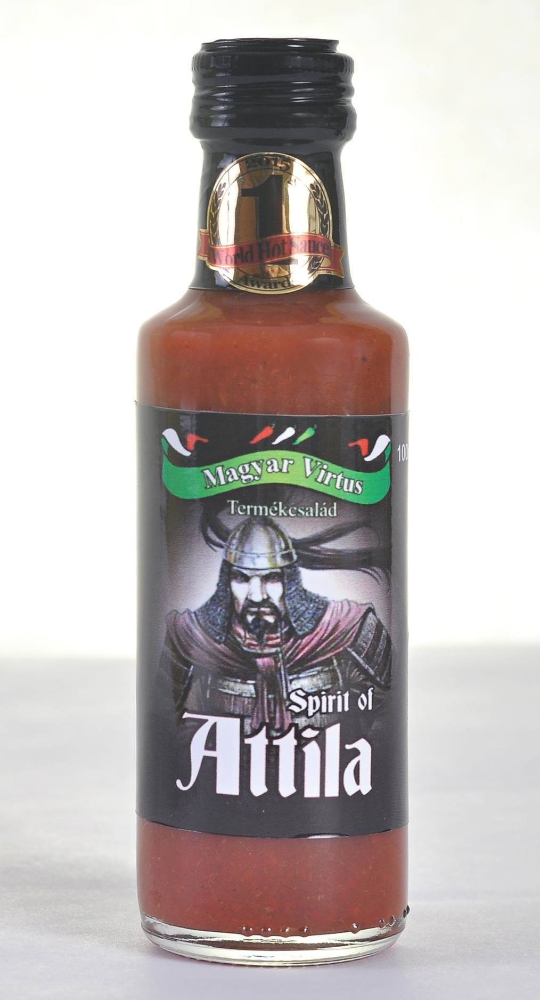

BBQ
1

koktélparadicsom
barnacukor
vöröshagyma
fokhagyma
füstölt cayenne
füstölt só
fűszerek
tartósítószer (Na-benzoát)
Füstös, édes, fűszeres szósz, pácoláshoz, grillezéshez.
Édes csípés
2
koktélparadicsom
chili ( cayenne, fresno, Jamaican Red)
cukor
vöröshagyma
fokhagyma
só
tartósítószer (Na-benzoát)
Jól illik sültekhez, húsokhoz, szárnyasokhoz, pizzákra, meleg szendvicsekre, vagy
csak a sült krumpli mellé.
Aranyszarvas
2
koktélparadicsom
chili ( cayenne, fresno, Jamaican Red)
vöröshagyma
fokhagyma
só
tartósítószer (Na-benzoát)
Jól illik sültekhez, húsokhoz, szárnyasokhoz, pizzákra, meleg szendvicsekre, vagy
csak a sült krumpli mellé
Zöld Felső
2
zöld chili (Padron, Jalapeno)
só
fűszerek
Na-benzoát
citromsav
Különleges, zöld színű chili szósz. Színét, a még zöld állapotban szedett chilik
adják, a jellegzetes friss, kissé padlizsánra emlékeztető ízzel. Pizzára, szendvicsekre, vagy
mártogatósnak ajánljuk.
Alabárdos
2
chili (Fresno, Jamaican Red)
fokhagyma
só
ecet
cukor
artósítószer (Na-benzoát)
Louisianai stílusú szósz, fokhagymával. Sültek, húsok mellé kiváló! Tökéletes
választás elsődleges, vagy másodlagos szósznak is.
Kabai Tüzes Mennykő
3
chili (Habanero, Yamaciai Red, Jalapeno )
koktélparadicsom
só
fűszerek
Na-benzoát
A 2016-os World Hot Sauce Awards (USA), medium kategóriájának II. helyezetje! Egy
igazán fűszeres, gyömbéres, chili szósz. Kitűnő már az étel előkészítésekor pácoláshoz, vagy sültek alá,
mellé. Hamburgerek, pizzák elsődleges, vagy másodlagos szószának is megállja a helyét. 1857. április
15-én Kaba határába csapódott egy meteorit, mely egyike az első meteoritoknak, amelyekben szerves
anyagot mutattak ki. Ennek a csillagászattörténelmi jelentőségű meteoritnak állít emléket a címkén
olvasható üzenet: in memoriam 1857.04.15
Sárga Vihar
3
sárga chili ( Habanero Yellow, Jamaican Yellow)
sárgaparadicsom
vöröshagyma
fokhagyma
só
citrom
tartósítószer (Na-benzoát)
Sárga alapanyagokból készült erős chili szósz. Színét, a sárgára érő paprikáktól és
paradicsomoktól kapja. A sárga paradicsomban nincs annyi paradicsomra jellemző sav, mint a piros
fajtákban, ezért kissé „simább”, selymesebb az íze, állaga. A kissé citromos „felhangok” tökéletes
párosítási lehetőséget adnak, pl. halakhoz, de szinte bármilyen sültek mellett is megállja a
helyét.Sajnos kevesen tudják, hogy a Magyar Nemzet történetének legnagyobb emberáldozatot követelő
időszaka a tatárjárás volt, amikor a Magyar Királyság lakosságának a fele odaveszett!Ennek az időszaknak
állít emléket a címkén olvasható üzenet: In memoriam: 1241
424
3
Habanero
koktélparadicsom
barnacukor
vöröshagyma
fokhagyma
fűszerek
folyékony füst
tartósítószer (Na-benzoát)
Füstös, erős barbeque szósz. Grillezéshez, sütéshez, sültek, húsok mellé kiváló
választás! Kóstoláskor először füstös édes ízt érzünk, majd követi a markáns csípősség, amely
végigkíséri étkezésünket. A 424-es gőzmozdony egy legendás járműtípus, egykor a magyar ipar büszkesége
volt. Számtalan nosztalgikus műben tűnik fel, a szépirodalomban, a filmben, a popzenében, klubokban, az
emberek emlékezetében, a modellezésben. (Wikipédia)
Mennydörgés
4
Habanero
só
tartósítószer (Na- benzoát)
Habanero extra szósz, 100 % Habanero! Naturális termék, csupán a Habanerokra
jellemző ízzel és csípősséggel. Tökéletes donor szósz, gazdagítva, keverve, elkészíthető a ház saját
szósza is.
Attila (Spirit of Attila)
5
Dorset Naga
Ghost Chili (Naga Jolokia)
fűszerek
tartósítószer (Na-benzoát)
A 2015-ös World Hot Sauce Awards (USA) kategória I. helyezett szósza!Magyaros ízű,
nagyon erős szósz! Jellemzője az ízeket követő fokozatosan erősödő, csípős érzés. Univerzálisan és
gazdaságosan használható.Attila az európai hunok leghíresebb nagykirálya volt, kora egyik leghatalmasabb
birodalmát uralta 434-től haláláig.
Kegyes Halál
5
Carolina Reaper
Trinidad Scorpion Moruga
só
tartósítószer(Na-Benzoát)
Kizárólag csak a regnáló és az azt megelőző világ legcsípősebb chilijeiből készül!
Minden az extrém csípősségnek van alárendelve! Mindkét összetevő 2.000.000 SHU fölötti értékkel bír!
Nagyon gazdaságos! :)
Csípős-magyaros paprikakrém
3
chili (Fresno, Cayenne)
só (10%)
tartósítószer (Na-benzoát)
Darált friss chilipaprika sóval. A népszerű magyar termék újragondolása. Kiváló
fűszer, húsleveshez, pörköltekhez, bármibe, amelyet szeretnénk pikánssá tenni.
Dominátor
4
Habanero
só
tartósítószer (Na-benzoát)
Habanero krém. 100 % Habanero! Naturális termék, csupán a Habanerokra jellemző
ízzel és csípősséggel. Aki valami csípősebbre vágyik, mint a tradicionális paprikakrém, de darált
paprika textúrát keres.
Hab'n'go
3
Habanero
Mango ivóvíz
kristálycukor
vanília
tartósítószer
Na-benzoát
kálium-szorbát
Összes cukortartalom: 25g/100g A 2016-os The Hot Pepper Awards (USA) kategória III.
helyezetje. Habanero befőtt mangóval. A Habanerókra jellemző déligyümölcsös íz párosítása a mangó,
semmivel sem összehasonlítható ízével, cukros befőttlében. Igazi különlegesség.
Chilis olaj
2
Olívaolaj
tört chili (cayenne)
Csípős fűszerolaj zöld salátákhoz, öntetekhez, főzéshez, sütéshez. Chili ágyon
érlelt növényi olaj.
Pogánybors
2
Chili (tabasco)
olívaolaj
Csípős chili olívaolajban. A capsaicin zsírban és olajokban oldódik, ezért az
üvegben lévő olívaolaj a chilivel együtt eltöltött idővel arányosan egyre csípősebbé válik. Az olajat
használhatjuk sütéshez-főzéshez, esetleg zöld salátákhoz, húsokra sütés előtt vagy után. A
chili természetesen külön is felhasználhatóak. Akár többször utántölthető!